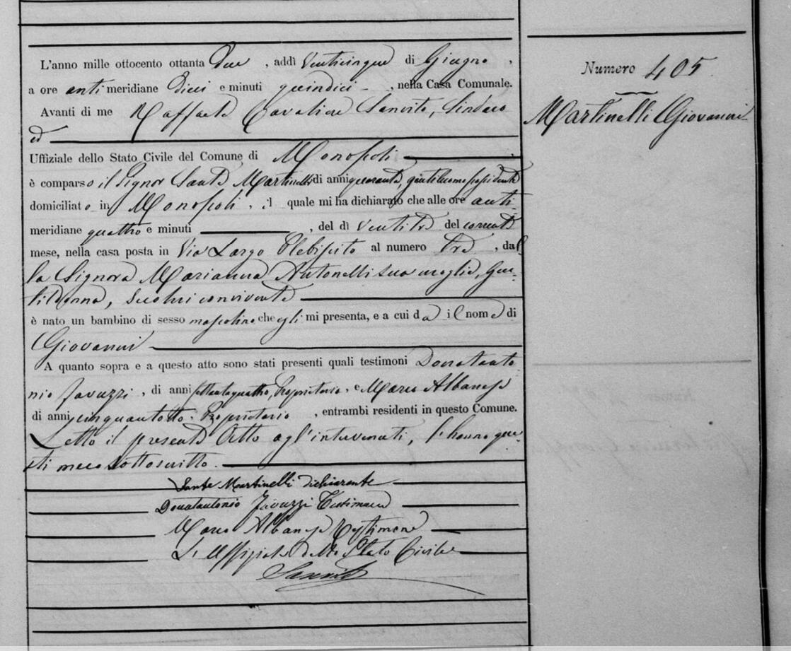
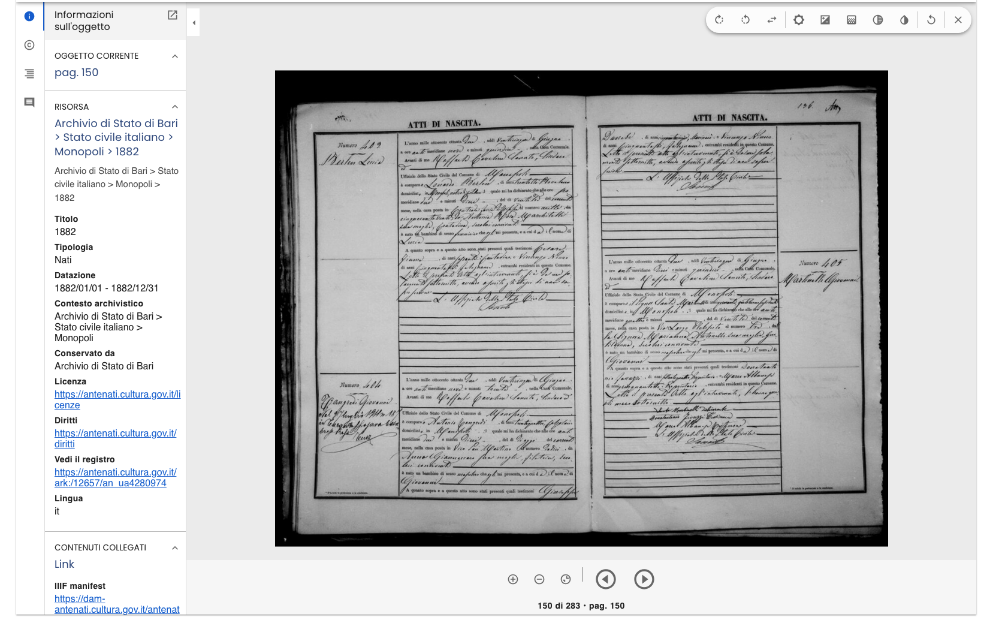

Due date, due momenti distinti
Nascita: 23 giugno 1882, ore 16, a Monopoli.
Dichiarazione e redazione dell’atto: 25 giugno 1882.
L’intestazione reca «addì Venticinque di Giugno». Nel corpo dell’atto il dichiarante riferisce la nascita alle ore «pomeridiane quattro» del «Ventitré del corrente mese». Il 25 giugno è quindi la data della registrazione, distinta dalla nascita.
Padre: Sante Martinelli. Madre: Marianna Antonelli. Questi dati sono letti dalla riproduzione manoscritta fornita dalla famiglia.
Il documento
Tocca l’immagine per aprirla e ingrandirla. Lo screenshot è conservato senza modifiche; la risoluzione disponibile è quella fornita dalla famiglia.


Fonte archivistica
Archivio di Stato di Bari → Stato civile italiano → Monopoli → 1882 → Nati. Pagina digitale 150 di 283, come indicato nella schermata del Portale Antenati fornita dalla famiglia il 15 novembre 2026.
Consulta il registro sul Portale Antenati
Visualizza la schermata con i riferimenti archivistici

La genealogia consultabile è aggiornata con questa fonte. Le scansioni e i PDF storici dell’archivio rimangono documenti originali e non vengono riscritti.